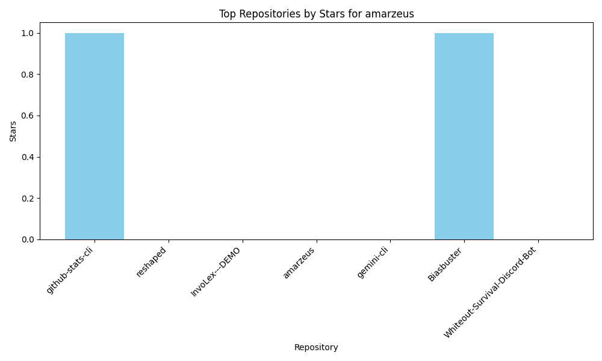

GitHub Stats Dashboard for amarzeus
Name:
Amar Kumar
Bio:
I turn raw data into actionable insights that tell stories and solve real-world problems. Working toward a role in AI/ML engineering or data analytics.
Location:
Bhagalpur, Bihar India
Followers:
1
Following:
0
Public Repos:
7
Public Gists:
0
Account Created:
2025-02-13T18:12:34Z
Top Repositories
Name
Stars
Language
github-stats-cli
1
Python
reshaped
0
N/A
InvoLex---DEMO
0
TypeScript
amarzeus
0
HTML
gemini-cli
0
TypeScript
Biasbuster
1
TypeScript
Whiteout-Survival-Discord-Bot
0
N/A
Chart
